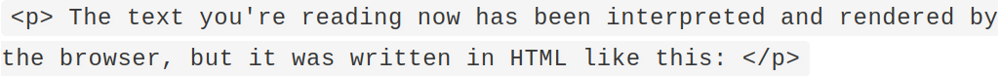
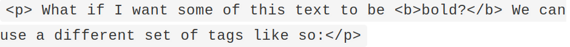

Short Course
Founders and Coders
Week 1: Toolkit & HTML
Getting started
- Sign up for a GitHub account on github.com
- Use your GitHub account to sign up for freecodecamp.org
- Use your GitHub account to sign up for codepen.com
- Please read the Code of Conduct and click the button to join our short course Slack channel: foundersandcoders.com/slack
- Please read over our Slack etiquette: github.com/foundersandcoders/slack-etiquette
Welcome!
Founders and Coders is a UK-based nonprofit
opening access to the digital economy through sharing our model of peer-led learning
Our values
Cooperative
Support for cooperative learning, cooperatively-owned businesses, and collaboration with the local community
Inclusive
Getting a more diverse group of people into tech training and into tech employment
Social Impact
Helping charities and social enterprises develop digital services
Why are we runnning a short course?
For two main reasons:
It aims to set prospective applicants to our full-time course on the path to completing our pre-requisites, through teaching the starter skills and technologies needed to pursue a career in web development.
The short course is also a great introduction to how we learn here at FAC, as we place emphasis on collaborative, peer-led learning, and techniques like pair programming.
What will we be learning?
The course curriculum:
Week 1
Toolkit and HTML
Week 2
CSS
Week 3
JavaScript
Week 4
More JavaScript and Codewars
There'll also be a small amount of work to take away after each session and complete at home.
This is by no means compulsory, but will definitely help you to cement some of the things we learn here!
Intro to web development 🖥️
What are HTML, CSS and JavaScript, and why do we need them?
What is a web page?

Ok, so what's hypertext?
Hypertext is text displayed on an electronic device that can contain references, or hyperlinks, to other information.
Kind of like this.
In fact, you're looking at a bunch of hypertext right now!
Which leads us onto...
HTML is an example of a hypertext language. It stands for: Hypertext Markup Language
Ok, I get hypertext. So what's markup?
Markup language allows us to define different elements on a page in a human-readable way.
Let's see an example...
HTML
In order to write HTML, we need to use something called tags. The text you're reading now has been interpreted and rendered by the browser, but it was written in HTML like this:
What if I want some of this text to be bold? We can use a different set of tags like so:

You'll be pleased to know that pretty much all webpages use HTML.
But that's not the end of the story!

Together, HTML, CSS and JavaScript make up the three core technologies of the web.
Some people find it helpful to think of their relationship to one another as nouns, adjectives and verbs.
HTML: Nouns 🏠
Our HTML dictates what content will be on the page. It provides our basic structure.
CSS: Adjectives 🎨
Our CSS describes how that content should look, how it should be laid out, and what styles it should have.
JavaScript: Verbs 🏃
And our JavaScript brings that content to life - it allows the user to interact with the content, providing a dynamic experience and determining the behaviour of the page.
Using freeCodeCamp 🏕️
Head to www.freeCodeCamp.org
Using DevTools 🔍
Open up your browser (preferably Google chrome) and head to the Google homepage
Pair Programming 🍐
What is pair programming?
Pair programming is when two programmers work together, often from the same computer or workstation.
Usually, one programmer is the so-called driver and writes the code, whilst the other reviews - although there are many different ways to work together.
Why pair programming?
Here at FAC, we believe pair programming is a fantastic way to facilitate both learning and teaching.
Having another pair of eyes on your code helps you spot errors you may have missed. Receving feedback in real time is immensely helpful!
Interestingly, many of us have also found that we learn the best when helping and leading a partner.
Pair Programming Methodologies
The Driving Test

One student sits at the computer and the other student acts as “examiner”.
The student being examined should explain their thinking as they work.
Whenever the examiner thinks the other student is being too quiet or does not understand something, they can ask for more information - but otherwise should offer no advice nor provide any feedback.
Pair Programming Pointers
Switch up the roles frequently.
Have patience with your partner, but also, with yourself!
Using Codepen ✍️
Head to www.codepen.io
Project 🔨
Let's build something!
Using the HTML you've learnt, build a tribute page to someone (or something) that inspires you.
Work together in pairs, try out some pair programming, and use Codepen.
You'll need to try and satisfy the following user stories:
1. I can see the title, or header, of the page
2. I can see an image on the page
3. I can see a paragraph of bold text underneath the image
4. I can click on a link that takes me to another website
If you finish all these user stories, feel free to keep adding more elements to your page. You may want to continue with the challenges on freeCodeCamp for inspiration.
Before we leave...
Make sure to share your Codepen with your partner, so that they can fork it and continue to work on it, if they so wish.
Before next week... 🍎
If you have time, continue working through 'Basic HTML and HTML5' on freeCodeCamp. It might be fun to also continue updating your tribute page project!